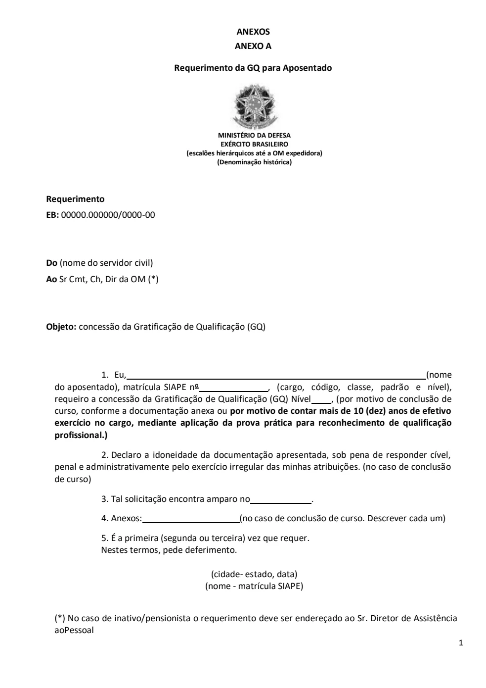
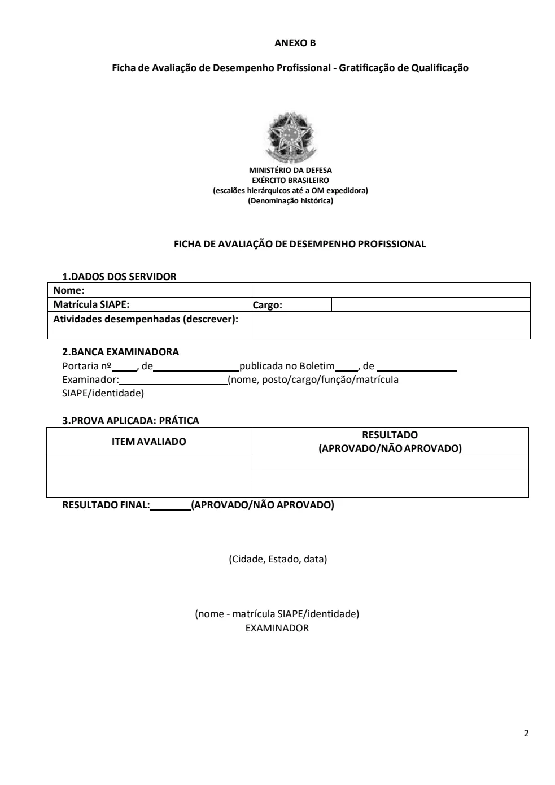
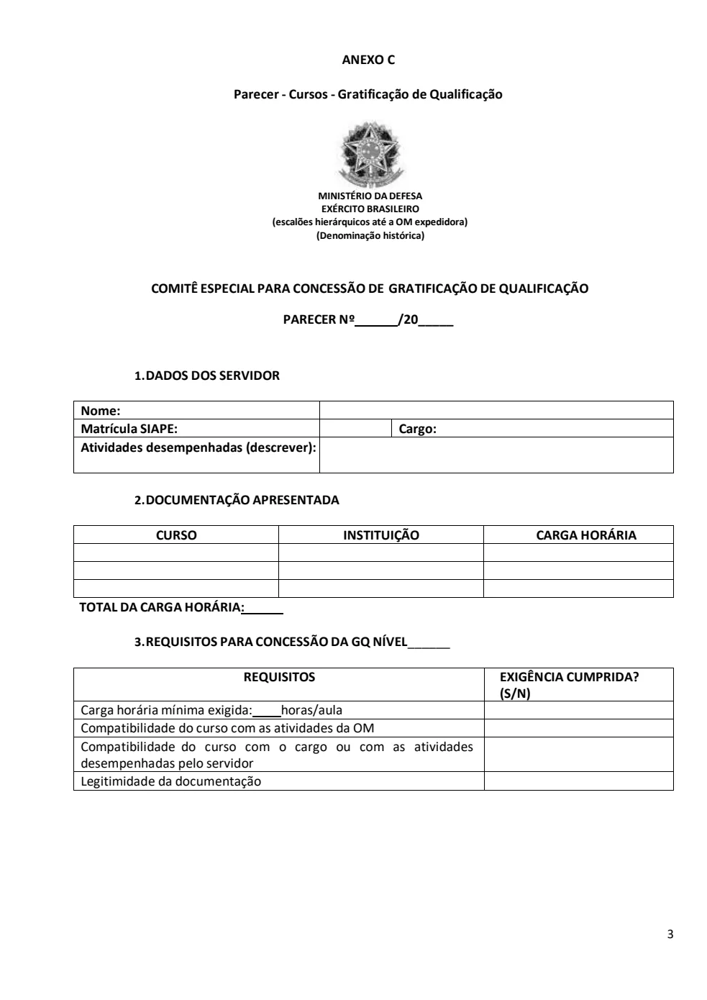
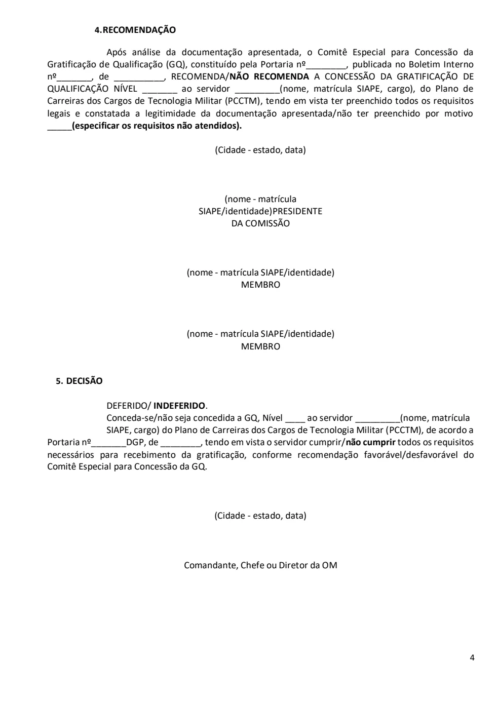
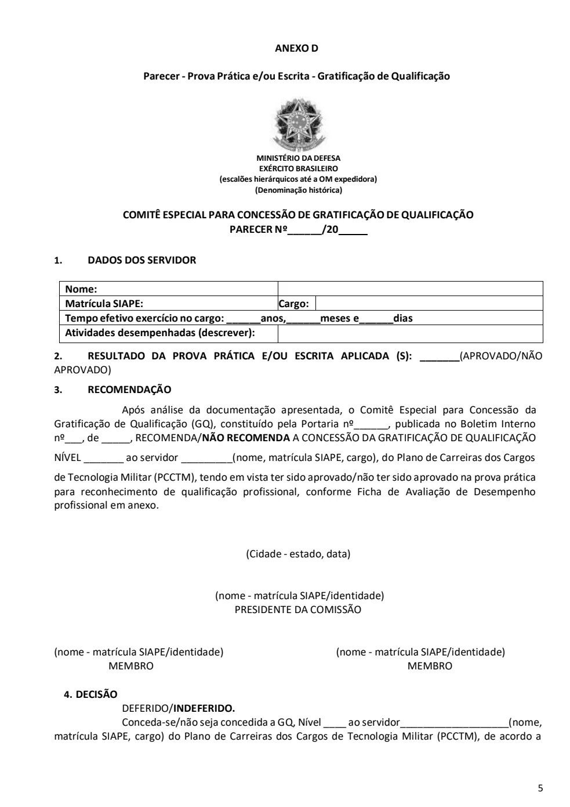

Texto extraído da edição fornecida, sem atualização normativa. Consulte a página original para conferir tabelas, formulários e instruções ilustradas. A numeração dos links corresponde à página do arquivo PDF.
Anexo A — requerimento de GQ
PDF · p. 1ANEXOS
ANEXO A
Requerimento da GQ para Aposentado
MINISTÉRIO DA DEFESA
EXÉRCITO BRASILEIRO
(escalões hierárquicos até a OM expedidora)
(Denominação histórica)
Requerimento
EB: 00000.000000/0000 -00
Do (nome do servidor civil)
Ao Sr Cmt, Ch, Dir da OM (*)
Objeto: concessão da Gratificação de Qualificação (GQ)
1. Eu, (nome
do aposentado), matrícula SIAPE nº , (cargo, código, classe, padrão e nível),
requeiro a concessão da Gratificação de Qualificação (GQ) Nível __ , (por motivo de conclusão de
curso, conforme a documentação anexa ou por motivo de contar mais de 10 (dez) anos de efetivo
exercício no cargo, mediante aplicação da prova prática para reconhecimento de qualificação
profissional.)
2. Declaro a idoneidade da documentação apres entada, sob pena de responder cível,
penal e administrativamente pelo exercício irregular das minhas atribuições. (no caso de conclusão
de curso)
3. Tal solicitação encontra amparo no .
4. Anexos: (no caso de conclusão de curso. Descrever cada um)
5. É a primeira (segunda ou terceira) vez que requer.
Nestes termos, pede deferimento.
(cidade- estado, data)
(nome - matrícula SIAPE)
(*) No caso de inativo/pensionista o requerimento deve ser endereçado ao Sr. Diretor de Assistência
ao Pessoal
Ver página original — tabelas, imagens e diagramas

Anexo B — ficha de avaliação
PDF · p. 2ANEXO B
Ficha de Avaliação de Desempenho Profissional - Gratificação de Qualificação
MINISTÉRIO DA DEFESA
EXÉRCITO BRASILEIRO
(escalões hierárquicos até a OM expedidora)
(Denominação histórica)
FICHA DE AVALIAÇÃO DE DESEMPENHO PROFISSIONAL
1.DADOS DOS SERVIDOR
2.BANCA EXAMINADORA
Portaria nº , de publicada no Boletim , de
Examinador: (nome, posto/cargo/função/matrícula
SIAPE/identidade)
3.PROVA APLICADA: PRÁTICA
ITEM AVALIADO RESULTADO
(APROVADO/NÃO APROVADO)
RESULTADO FINAL: (APROVADO/NÃO APROVADO)
(Cidade, Estado, data)
(nome - matrícula SIAPE/identidade)
EXAMINADOR
Nome:
Matrícula SIAPE: Cargo:
Atividades desempenhadas (descrever):
Ver página original — tabelas, imagens e diagramas

Anexo C — parecer sobre cursos
PDF · p. 3ANEXO C
Parecer - Cursos - Gratificação de Qualificação
MINISTÉRIO DA DEFESA
EXÉRCITO BRASILEIRO
(escalões hierárquicos até a OM expedidora)
(Denominação histórica)
COMITÊ ESPECIAL PARA CONCESSÃO DE GRATIFICAÇÃO DE QUALIFICAÇÃO
PARECER Nº______/20_____
1. DADOS DOS SERVIDOR
Nome:
Matrícula SIAPE: Cargo:
Atividades desempenhadas (descrever):
2. DOCUMENTAÇÃO APRESENTADA
CURSO INSTITUIÇÃO CARGA HORÁRIA
TOTAL DA CARGA HORÁRIA:
3. REQUISITOS PARA CONCESSÃO DA GQ NÍVEL______
REQUISITOS EXIGÊNCIA CUMPRIDA?
(S/N)
Carga horária mínima exigida: horas/aula
Compatibilidade do curso com as atividades da OM
Compatibilidade do curso com o cargo ou com as atividades
desempenhadas pelo servidor
Legitimidade da documentação
Ver página original — tabelas, imagens e diagramas

Anexo C — parecer sobre cursos
PDF · p. 44. RECOMENDAÇÃO
Após análise da documentação apresentada, o Comitê Especial para Concessão da
Gratificação de Qualificação (GQ), constituído pela Portaria nº________, publicada no Boletim Interno
nº_______, de __________, RECOMENDA/ NÃO RECOMENDA A CONCESSÃO DA GRATIFICAÇÃO DE
QUALIFICAÇÃO NÍVEL _______ ao servidor _________(nome, matrícula SIAPE, cargo), do Plano de
Carreiras dos Cargos de Tecnologia Militar (PCCTM), te ndo em vista ter preenchido todos os requisitos
legais e constatada a legitimidade da documentação apresentada/não ter preenchido por motivo
_____(especificar os requisitos não atendidos).
(Cidade - estado, data)
(nome - matrícula
SIAPE/identidade) PRESIDENTE
DA COMISSÃO
(nome - matrícula SIAPE/identidade)
MEMBRO
(nome - matrícula SIAPE/identidade)
MEMBRO
5. DECISÃO
DEFERIDO/ INDEFERIDO.
Conceda-se/não seja concedida a GQ, Nível ____ ao servidor _________(nome, matrícula
SIAPE, cargo) do Plano de Carreiras dos Cargos de Tecnologia Militar ( PCCTM), de acordo a
Portaria nº_______DGP, de ________, tendo em vista o servidor cumprir/não cumprir todos os requisitos
necessários para recebimento da gratificação, conforme recomendação favorável/desfavorável do
Comitê Especial para Concessão da GQ.
(Cidade - estado, data)
Comandante, Chefe ou Diretor da OM
Ver página original — tabelas, imagens e diagramas

Anexo D — parecer sobre prova
PDF · p. 5ANEXO D
Parecer - Prova Prática e/ou Escrita - Gratificação de Qualificação
MINISTÉRIO DA DEFESA
EXÉRCITO BRASILEIRO
(escalões hierárquicos até a OM expedidora)
(Denominação histórica)
COMITÊ ESPECIAL PARA CONCESSÃO DE GRATIFICAÇÃO DE QUALIFICAÇÃO
PARECER Nº______/20_____
1. DADOS DOS SERVIDOR
Nome:
Matrícula SIAPE: Cargo:
Tempo efetivo exercício no cargo: ______anos,______meses e______dias
Atividades desempenhadas (descrever):
2. RESULTADO DA PROVA PRÁTICA E/OU ESCRITA APLICADA (S): _______ (APROVADO/NÃO
APROVADO)
3. RECOMENDAÇÃO
Após análise da documentação apresentada, o Comitê Especial para Concessão da
Gratificação de Qualificação (GQ), constituído pela Portaria nº______, publicada no Boletim Interno
nº___, de _____, RECOMENDA/NÃO RECOMENDA A CONCESSÃO DA GRATIFICAÇÃO DE QUALIFICAÇÃO
NÍVEL _______ ao servidor _________(nome, matrícula SIAPE, cargo), d o Plano de Carreiras dos Cargos
de Tecnologia Militar (PCCTM), tendo em vista ter sido aprovado/não ter sido aprovado na prova prática
para reconhecimento de qualificação profissional, conforme Ficha de Avaliação de Desempenho
profissional em anexo.
(Cidade - estado, data)
(nome - matrícula SIAPE/identidade)
PRESIDENTE DA COMISSÃO
(nome - matrícula SIAPE/identidade) (nome - matrícula SIAPE/identidade)
MEMBRO MEMBRO
4. DECISÃO
DEFERIDO/INDEFERIDO.
Conceda-se/não seja concedida a GQ, Nível ____ ao servidor___________________(nome,
matrícula SIAPE, cargo) do Plano de Carreiras dos Cargos de Tecnologia Militar (PCCTM), de acordo a
Ver página original — tabelas, imagens e diagramas

Anexo D — parecer sobre prova
PDF · p. 6Portaria nº ____ DGP, de ________, tendo em vista o servidor cumprir/não cumprir todos os requisitos
necessários para recebimento da gratificação, conforme recomendação favorável/ desfavorável do
Comitê Especial para Concessão da GQ.
(Cidade - estado, data)
Comandante, Chefe ou Diretor